| 1951 | Company founder Nobuo Fukushima starts Fukushima Industries Corporation in Asahi-ku, Osaka. | |
|---|---|---|
| 1956 | Head office and main production factory move to Mitejima, Nishi Yodogawa-ku, Osaka. | |
| 1962 | Company develops and begins mass production of the ER Series, the industry's first commercial standard refrigerators. | 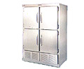 |
| 1964 | Responding to the increase of volume sales outlets, the company standardizes and starts production of open showcase freezer refrigerators. | |
| 1974 | New head office is built in Mitejima 3-chome, Nishi Yodogawa-ku, Osaka. | |
| 1979 | Company develops and starts sale of the energy saving open showcase SE Series. | 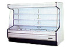 |
| 1984 | New Okayama Factory is established in Shoo-cho, Katsuta-gun and starts production. Development and sale of the enhanced function open showcase SX Series. | 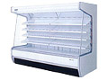 |
| 1987 | Company fully remodels its commercial Freezer Refrigerators with the development and sale of the ERX Series with its fully automatic heater def. | 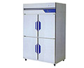 |
| 1988 | Company enters the field of defrosting, jointly developing with Nippon Light Metal Co., Ltd. the "clean defroster", a high humidity air defroster. | |
| 1989 | Company enters the field of bakery with the development of a bakery machine. | |
| 1994 | OTC trading status is acquired on JASDAQ and IPO is made. | |
| 1995 | Listed on the Osaka Securities Exchange (Part 2). The Shiga Factory is established at its present site in Minakuchi-cho, Kouka-city, Shiga-ken and starts production. | |
| 1996 | Commercial Fridge Freezers are fully remodeled with the development and sale of the new microprocessor controlled EXD Series. | 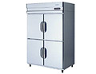 |
| 1997 | Company provides 100% funding for the establishment of subsidiary
"Fukusima International (H.K.) Co., Limited" in Hong
Kong. Development and sale of the new NEXTER Series showcase freezer refrigerators. |
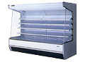 |
| 1998 | Development and sale of new HACCP compatible "Blast Chiller / Shock Freezer" cooking system. | 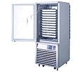 |
| 1999 | Development of "Low Temperature Incubator" and "Pharmaceutical Showcase Refrigerator" medical equipment mark entry into the physics and chemistry and medical equipment fields. | 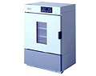 |
| 2000 | Shiga Factory receives ISO14001 certification. | |
| 2001 | Introduction of "Fukushima S Net 24" provides a 24 hour maintenance service via remote management and control. | |
| 2002 | Listed on the Tokyo Stock Exchange (Part 2). Okayama Factory receives ISO9001 certification. Consolidated subsidiary Fukushima Tourei Co. Ltd. is founded. Reverse-osmosis filtration system RO water vending machine is developed. |
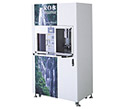 |
| 2004 | Shiga Factory receives ISO9001 certification. Consolidated subsidiary Fukusima International (Singapore) Pte.,Ltd is founded. Consolidated subsidiary Taiwan Fukusima International Co., Ltd is founded. |
|
| 2005 | Listed on the Tokyo Stock Exchange (Part 1) and Osaka Securities Exchange (Part 1). | |
| 2006 | Consolidated subsidiary "Beijing FuRenJing Refrigeration and Machinery
Electric Co., Ltd." changes its trading name to "Beijing
ER Shang-Fukushima Machinery Electric Co.,Ltd" and moves
to a new factory. Second Okayama factory is established and starts operation on land adjoining the existing Okayama factory. Full remodeling of our commercial fridge freezers with the development and sale of the URD Series with its improved energy saving. |
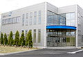 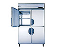 |
| 2007 | Company develops and starts sale of the inverter refrigerators IR Series. Company develops and starts sale of the Axia-Eco system. |
|
| 2008 | Company develops and starts sale of the inverter refrigerators with carbon offset for the first time in the industry's world. Consolidated subsidiary Fukusima International (Shanghai)Co.,Ltd is founded. |
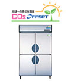 |
| 2009 | Company acuqires all the stocks of High-bridge Co.,Ltd.Company makes High-bridge Co.,Ltd and TAKAHASHI MANUFACTURING Co.,Ltd which is High-bridge Co.,Ltd of a wholly-owned subsidiary consolidate subsidiary. Company develops and starts sale of the new IM Series inverter showcase freezer refrigerators. |

|
||||||||||||